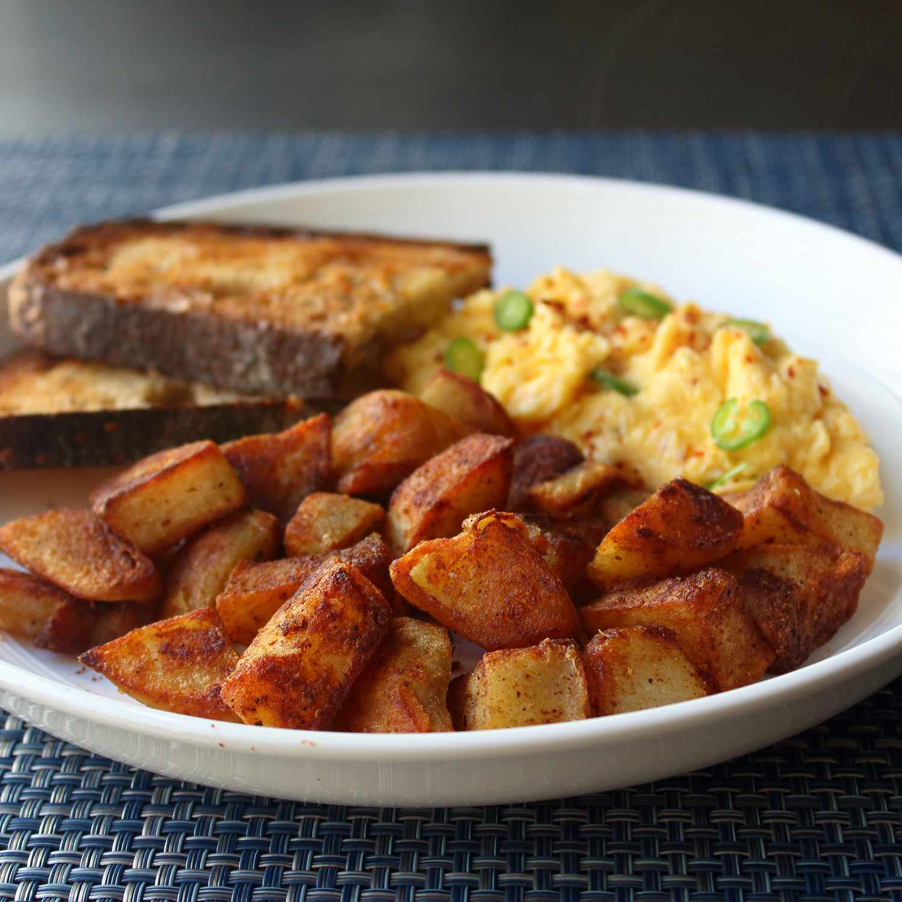

Crispy Fries backed in butter
Elevate your home cooking with the secret to achieving irresistibly crispy home fries
reminiscent of your favorite diner's offerings. The crucial step lies in precooking the potatoes and
allowing them to cool to room temperature before they hit the buttered pan.
By implementing this unique approach, excess moisture is eliminated, ensuring flawlessly
crusty and golden-brown edges that take your home fries to a whole new level of perfection.
Say goodbye to mediocre home fries and welcome a culinary transformation.
This innovative technique not only guarantees a delightful crunch but also sets your
homemade dish apart. Take your cooking skills up a notch by following this recipe,
and savor the satisfaction of mastering the art of crafting home fries with
the perfect crispy texture, making each bite a culinary delight.
- 3 large russet potatoes, peeled and quartered
- 2 tablespoons olive oil
- 1 tablespoon butter
- 1/4 teaspoon paprika
- 1 pinch cayenne pepper, or to taste
- 1 pinch garlic powder
- 1 pinch onion powder
- salt and ground black pepper to taste
- 1 tablespoon chopped fresh chives
- Arrange potatoes evenly on a microwave-safe plate. Microwave on high until just
tender, about 4 minutes. Let cool to room temperature. Cut potatoes into bite-sized chunks.
- Heat butter and olive oil in a nonstick skillet over medium-high heat until
butter melts and starts to turn brown. Swirl the pan and add potatoes;
shake the pan to arrange in an even layer. Season with paprika, cayenne, garlic powder,
onion powder, salt, and pepper.
- Continue to toss potatoes and cook until reddish-brown, crusty, and crispy on the
edges, 10 to 12 minutes. If potatoes are cooking too quickly, reduce the heat
to medium. Garnish with chives.